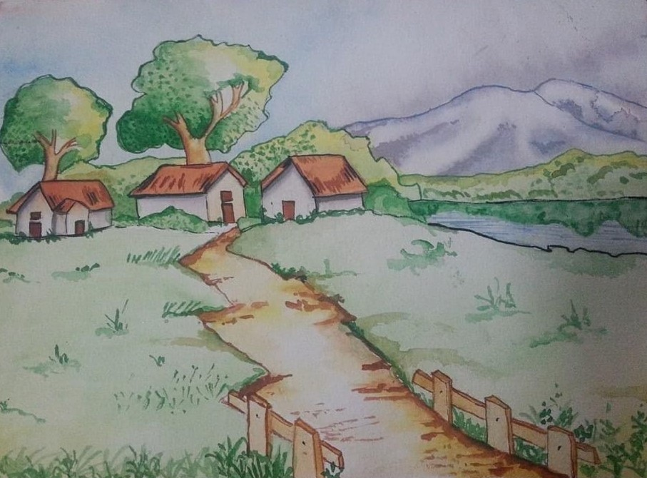
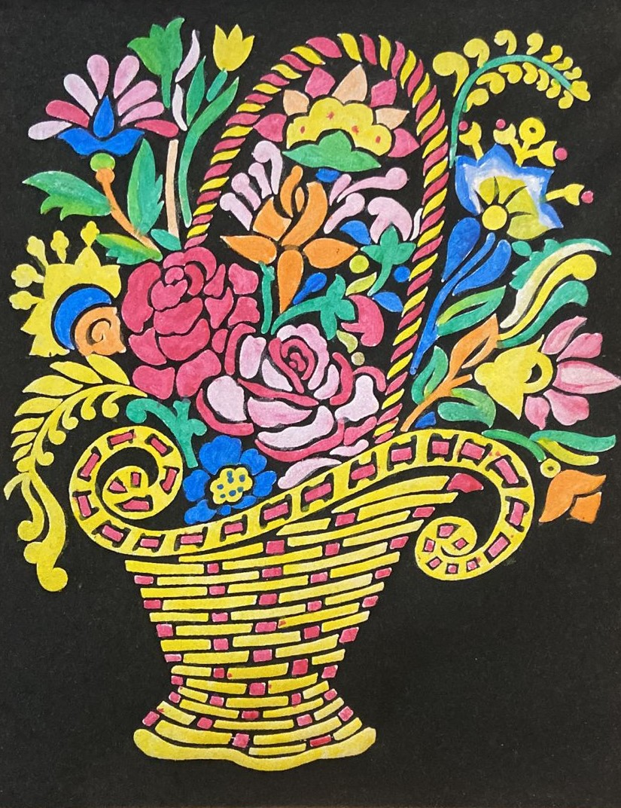

Art has been a way for me to express my ideas, while also being an activity that allows me to be focussed and feel relaxed after. Hey there! I am Aditya Behera a student in 12th grade at Indus International Hyderabad. I am a dedicated student, passionate about working towards a career in Design. Art or even just creating something from scratch along with the process of learning and brainstorming is fun and motivates to do more. This is one of driving reasons as to why I am interested in Design. I feel with my keenness to learn and create more combined with my interest in Art and Computer Science will allow me to walk down the career path that is Design related. Apart from art, I am a gamer. I mostly play competitive games, as the feeling of satisfaction and refreshment I gain from winning matches and progressing further up ranks is something I even relate to in real life as well. I also read books and listen to music. I mostly tend to indulge in mystery novels as I like the suspense that the stories create. Recently however, I have been reading many mangas, which are graphic novels originating from Japan. I really like the stories with their extricate world-building combined with the character designs and art. While the music I listen to is not very varied, I am not opposed to listening to new genres, any song that sounds good to me, will find its place in my playlist.
As a child, I took up art classes in the 2nd grade and continued all the way till 7th grade. In all those years I mainly did Still Life Art and eventually picked up Shading. I also learnt how to use water colours and experimented with painting on glass and fabric.
One of the art techniques at I learnt at a young age was ‘Shading’. Combined with my skill in drawing inanimate objects, otherwise called ‘Still Art’, I used Shading to give my drawings depth and lighting. With lighter shades depicting reflected light and darker shades representing areas that are away from direct light, it is possible to make a drawing appear three-dimensional. By Shading, there is an illusion of volume, depth, contrast and the viewer’s point of view is shifted to the focal point of the art which is helpful in Design.
After doing Still Art with pencils for many years, picking up water colours was a completely new experience for me. The biggest difference between pencils and paints is that I had to mix water with the paint to get a lighter shade of a colour. Like a pencil, there was variation in strokes when the brush was held at different angles. I learnt how diluting a single colour can give many different shades and I used that to give details to objects. I had to spend more time giving details through colours rather than with drawing it.
Art on glass is an interesting technique as the surface is slippery and the paint can crack when it dries. Managing layers of paint is harder to do on glass than it is on paper or canvas. I used water-based glass colours to make my art pieces. Like water colours, a generous amount of paint needs to be applied to the glass for a flat layer. Diluting the paint with water makes the shade lighter and can be used to create depth and contrast. Painting on glass requires more patience as the paint takes longer to dry and since I used water-based paints, I had to keep in mind the results I would get when the paints mixed with water or other colours.
Although I have not done many artworks on fabric, I have learnt quite a bit from it. The cloth which is being painted on makes a big difference, it can influence the choice of paints and techniques used. There is the whole process of pre-washing the fabric and ironing it out. Cloth is generally more absorbent, so I had to use more paint than usual, and the surface was rougher as well, so I had to be careful with my brush strokes. The main takeaway for me was the way I handled the brush. I was able to learn to give softer and more precise strokes.
I have seen many edits or montages on YouTube and other social media, and I always wanted to make on my own montage using my own content. I have made 2 montages, learning the techniques from online resources.
To make the first montage, I used Hitfilm Express 14. The edits in this are not very complex. I had to learn about the basic tools such as the timeline, selection tool, snip, etc. I learnt about basic effects, lighting, audio syncing and tracking while editing this.
To make the second montage, I again used Hitfilm Express 14. I learnt to add flow to the edits and my audio syncing had improved from before. Since I utilised the entire song, it was a long project.